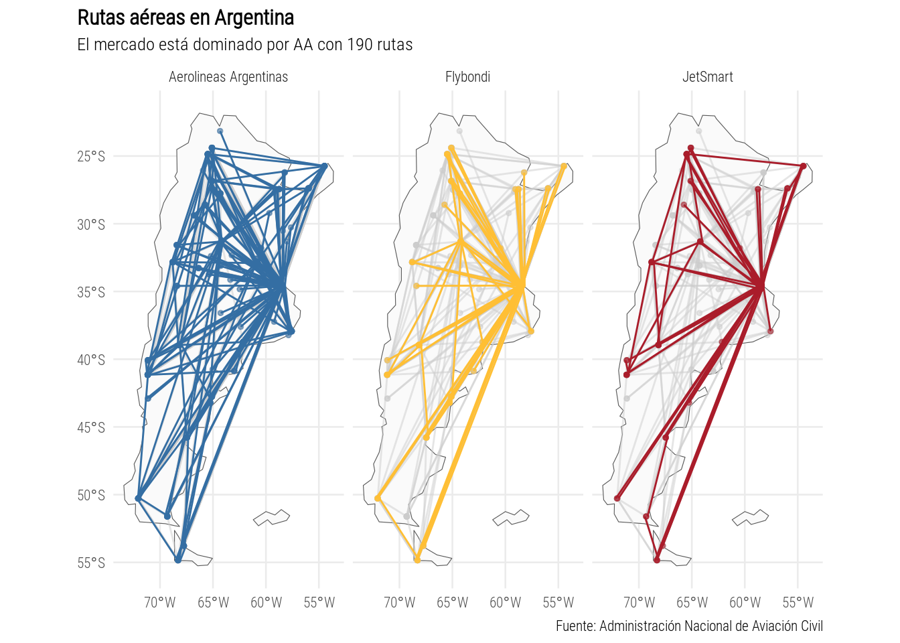

Datos
Lo primero que imaigné cuando pensé en un mapa con lines son las
rutas aereas en Argentina. Por supuesto encontrar esos datos no fue una
tarea fácil. No porque no hubiera datos, al contrario encontré mucha
información sobre pasajeros, rutas, vuelos, etc. Algunos en tablas
publicadas en formato pdf. Otras tables en excel, una debajo de la otra
en la misma hoja sin mucha explicación de que era cada cosa. En algunos
casos eran datos derivados de fuentes oficiales, pero sin enformación
sobre cómo habían sido procesados para llegar a tener la pinta que
tenían.
Finalmente me decidí por los datos de Aterrizajes
y despegues procesados por ANAC en el año 2023 que si bien tiene
datos de vuelos individuales, puedo extraer la información de las rutas
aereas activas y que empresas las usan.
vuelos <- fread("https://datos.transporte.gob.ar/dataset/21038a1a-c3c7-4494-b76a-3a2a8fbb83b5/resource/e910fead-ade3-40ce-ae8f-cad2017aa007/download/202309_informe_ministerio.csv") %>%
janitor::clean_names()
rutas <- vuelos %>%
.[clasificacion_vuelo == "Doméstico" &
clase_de_vuelo_todos_los_vuelos == "Regular" &
tipo_de_movimiento == "Despegue"] %>%
setnames("origen_destino", "destino") %>%
.[, ruta := paste0(aeropuerto, "-", destino)] %>%
.[, .(ruta = unique(ruta)), by = .(aerolinea_nombre)] %>%
tidyr::separate(ruta, into = c("origen", "destino"), remove = FALSE) %>%
setDT() %>%
.[, ruta_inv := paste0(destino, "-", origen)]
rutas_unicas <- c()
for (r in seq_len(nrow(rutas))) {
if (!(rutas$ruta[r] %in% rutas_unicas) & !(rutas$ruta_inv[r] %in% rutas_unicas)) {
rutas_unicas <- c(rutas_unicas, rutas$ruta[r])
}
}
rutas <- rutas[data.table(ruta = rutas_unicas), on = .NATURAL] %>%
.[aerolinea_nombre %in% c("AEROLINEAS ARGENTINAS SA", "FB LÍNEAS AÉREAS - FLYBONDI", "JETSMART AIRLINES S.A.")] %>%
.[, id_ruta := seq_len(.N)]
Todo muy ingenuo de mi parte, me llevo mucho más tiempo del que
imaginaba poder quedarme con las rutas únicas. El problema es que
“IGU-EZE” es lo mismo que “EZE-IGU” para este problema en particular.
Pero finalmente y con un poco de fuerza bruta lo logré. También me quedo
con las empresas principales, ya que hay muchas empresas privada con
poquisimos vuelos que solo suman ruido.
A mitad de camino me di cuenta que como esto se llama 30 días de
MAPAS necesito también la ubicación geográfica de los aeropuertos para
graficarlos y conectarlos según las rutas. El Ministerio de Transporte
tenía los dtos publicados, el único detalle es que la columna latitud en
ese dataset es en realidad la longitud. No hay remate.
ubicación_aeropuertos <- fread("https://datos.transporte.gob.ar/dataset/62b3fe5f-ffe6-4d8f-9d59-bfabe75d1ee8/resource/eb54e49e-9a5a-4614-91f4-526c650d0105/download/aeropuertos_detalle.csv") %>%
.[, .(local, latitud = longitud, longitud = latitud)]
mapa <- rnaturalearth::ne_countries(country = c("Argentina", "Falkland Islands"), returnclass = "sf")
origen <- ubicación_aeropuertos[rutas, on = c("local" = "origen")] %>%
setnames(c("local"), c("aeropuerto")) %>%
.[, destino := NULL]
destino <- ubicación_aeropuertos[rutas, on = c("local" = "destino")] %>%
setnames(c("local"), c("aeropuerto")) %>%
.[, origen := NULL]
Finalmente, con el mapa, las rutas y la ubicación de los aeropuertos
logré el gráfico que quería. Para graficar las rutas la clave está en
agregar la columna id_ruta que luego sirve para graficar
lineas por cada uno de esos grupos que se forman con el aeropuerto de
origen y el de destino.
rbind(origen, destino) %>%
.[, aerolinea_nombre := forcats::fct_recode(aerolinea_nombre,
"Aerolineas Argentinas" = "AEROLINEAS ARGENTINAS SA",
"Flybondi" = "FB LÍNEAS AÉREAS - FLYBONDI",
"JetSmart" = "JETSMART AIRLINES S.A.")] %>%
ggplot(aes(longitud, latitud)) +
geom_sf(data = mapa, inherit.aes = FALSE, fill = "grey98") +
geom_point(data = ~copy(.x)[, aerolinea_nombre := NULL], color = "grey80", alpha = 0.5, size = 1) +
geom_line(data = ~copy(.x)[, aerolinea_nombre := NULL], aes(group = id_ruta),
color = "grey80", alpha = 0.5) +
geom_point(aes(color = aerolinea_nombre), alpha = 0.5, size = 1) +
geom_line(aes(color = aerolinea_nombre, group = id_ruta),
position = position_dodge(width = 0.5)) +
scale_color_manual(values = c("#346EA3", "#FFBF34", "#AA1C2A"), guide = NULL) +
facet_wrap(~aerolinea_nombre) +
labs(x = NULL, y = NULL, color = NULL,
title = "Rutas aéreas en Argentina",
subtitle = "El mercado está dominado por AA con 190 rutas",
caption = "Fuente: Administración Nacional de Aviación Civil") +
theme_minimal(base_size = 10,
base_family = "Roboto Condensed Light") +
theme(plot.title.position = "plot",
plot.title = element_text(face = "bold"))

# ggsave("day2.png", device = png, type = "cairo", bg = "white", width = 25, height = 18, units = "cm", dpi = 150)
LS0tCnRpdGxlOiAnRGlhIDI6IExpbmVhcycKb3V0cHV0OgogIGh0bWxfZG9jdW1lbnQ6CiAgICBjb2RlX2Rvd25sb2FkOiB0cnVlCi0tLQoKYGBge3Igc2V0dXAsIGluY2x1ZGU9RkFMU0V9CmtuaXRyOjpvcHRzX2NodW5rJHNldCgKCWVjaG8gPSBUUlVFLAoJbWVzc2FnZSA9IEZBTFNFLAoJd2FybmluZyA9IEZBTFNFCikKbGlicmFyeShkcGx5cikKbGlicmFyeShnZ3Bsb3QyKQpsaWJyYXJ5KGRhdGEudGFibGUpCmBgYAoKIyMgRGF0b3MKCkxvIHByaW1lcm8gcXVlIGltYWlnbsOpIGN1YW5kbyBwZW5zw6kgZW4gdW4gbWFwYSBjb24gbGluZXMgc29uIGxhcyBydXRhcyBhZXJlYXMgZW4gQXJnZW50aW5hLiBQb3Igc3VwdWVzdG8gZW5jb250cmFyIGVzb3MgZGF0b3Mgbm8gZnVlIHVuYSB0YXJlYSBmw6FjaWwuIE5vIHBvcnF1ZSBubyBodWJpZXJhIGRhdG9zLCBhbCBjb250cmFyaW8gZW5jb250csOpIG11Y2hhIGluZm9ybWFjacOzbiBzb2JyZSBwYXNhamVyb3MsIHJ1dGFzLCB2dWVsb3MsIGV0Yy4gQWxndW5vcyBlbiB0YWJsYXMgcHVibGljYWRhcyBlbiBmb3JtYXRvIHBkZi4gT3RyYXMgdGFibGVzIGVuIGV4Y2VsLCB1bmEgZGViYWpvIGRlIGxhIG90cmEgZW4gbGEgbWlzbWEgaG9qYSBzaW4gbXVjaGEgZXhwbGljYWNpw7NuIGRlIHF1ZSBlcmEgY2FkYSBjb3NhLiBFbiBhbGd1bm9zIGNhc29zIGVyYW4gZGF0b3MgZGVyaXZhZG9zIGRlIGZ1ZW50ZXMgb2ZpY2lhbGVzLCBwZXJvIHNpbiBlbmZvcm1hY2nDs24gc29icmUgY8OzbW8gaGFiw61hbiBzaWRvIHByb2Nlc2Fkb3MgcGFyYSBsbGVnYXIgYSB0ZW5lciBsYSBwaW50YSBxdWUgdGVuw61hbi4KCkZpbmFsbWVudGUgbWUgZGVjaWTDrSBwb3IgbG9zIGRhdG9zIGRlIFtBdGVycml6YWplcyB5IGRlc3BlZ3VlcyBwcm9jZXNhZG9zIHBvciBBTkFDIGVuIGVsIGHDsW8gMjAyM10oaHR0cHM6Ly9kYXRvcy50cmFuc3BvcnRlLmdvYi5hci9kYXRhc2V0L2F0ZXJyaXphamVzLXktZGVzcGVndWVzLXByb2Nlc2Fkb3MtcG9yLWxhLWFkbWluaXN0cmFjaW9uLW5hY2lvbmFsLWRlLWF2aWFjaW9uLWNpdmlsLWFuYWMvYXJjaGl2by9lOTEwZmVhZC1hZGUzLTQwY2UtYWU4Zi1jYWQyMDE3YWEwMDcpIHF1ZSBzaSBiaWVuIHRpZW5lIGRhdG9zIGRlIHZ1ZWxvcyBpbmRpdmlkdWFsZXMsIHB1ZWRvIGV4dHJhZXIgbGEgaW5mb3JtYWNpw7NuIGRlIGxhcyBydXRhcyBhZXJlYXMgYWN0aXZhcyB5IHF1ZSBlbXByZXNhcyBsYXMgdXNhbi4KCmBgYHtyfQp2dWVsb3MgPC0gZnJlYWQoImh0dHBzOi8vZGF0b3MudHJhbnNwb3J0ZS5nb2IuYXIvZGF0YXNldC8yMTAzOGExYS1jM2M3LTQ0OTQtYjc2YS0zYTJhOGZiYjgzYjUvcmVzb3VyY2UvZTkxMGZlYWQtYWRlMy00MGNlLWFlOGYtY2FkMjAxN2FhMDA3L2Rvd25sb2FkLzIwMjMwOV9pbmZvcm1lX21pbmlzdGVyaW8uY3N2IikgJT4lIAogIGphbml0b3I6OmNsZWFuX25hbWVzKCkKCnJ1dGFzIDwtIHZ1ZWxvcyAlPiUgCiAgLltjbGFzaWZpY2FjaW9uX3Z1ZWxvID09ICJEb23DqXN0aWNvIiAmIAogICAgICBjbGFzZV9kZV92dWVsb190b2Rvc19sb3NfdnVlbG9zID09ICJSZWd1bGFyIiAmIAogICAgICB0aXBvX2RlX21vdmltaWVudG8gPT0gIkRlc3BlZ3VlIl0gJT4lIAogIHNldG5hbWVzKCJvcmlnZW5fZGVzdGlubyIsICJkZXN0aW5vIikgJT4lIAogIC5bLCBydXRhIDo9IHBhc3RlMChhZXJvcHVlcnRvLCAiLSIsIGRlc3Rpbm8pXSAlPiUgCiAgLlssIC4ocnV0YSA9IHVuaXF1ZShydXRhKSksIGJ5ID0gLihhZXJvbGluZWFfbm9tYnJlKV0gJT4lIAogIHRpZHlyOjpzZXBhcmF0ZShydXRhLCBpbnRvID0gYygib3JpZ2VuIiwgImRlc3Rpbm8iKSwgcmVtb3ZlID0gRkFMU0UpICU+JSAKICBzZXREVCgpICU+JSAKICAuWywgcnV0YV9pbnYgOj0gcGFzdGUwKGRlc3Rpbm8sICItIiwgb3JpZ2VuKV0gCgpydXRhc191bmljYXMgPC0gYygpCgpmb3IgKHIgaW4gc2VxX2xlbihucm93KHJ1dGFzKSkpIHsKICAKICBpZiAoIShydXRhcyRydXRhW3JdICVpbiUgcnV0YXNfdW5pY2FzKSAmICEocnV0YXMkcnV0YV9pbnZbcl0gJWluJSBydXRhc191bmljYXMpKSB7CiAgICBydXRhc191bmljYXMgPC0gYyhydXRhc191bmljYXMsIHJ1dGFzJHJ1dGFbcl0pCiAgICAKICB9CiAgCn0KCnJ1dGFzIDwtIHJ1dGFzW2RhdGEudGFibGUocnV0YSA9IHJ1dGFzX3VuaWNhcyksIG9uID0gLk5BVFVSQUxdICU+JSAKICAuW2Flcm9saW5lYV9ub21icmUgJWluJSBjKCJBRVJPTElORUFTIEFSR0VOVElOQVMgU0EiLCAiRkIgTMONTkVBUyBBw4lSRUFTIC0gRkxZQk9OREkiLCAiSkVUU01BUlQgQUlSTElORVMgUy5BLiIpXSAlPiUgCiAgLlssIGlkX3J1dGEgOj0gc2VxX2xlbiguTildCmBgYAoKVG9kbyBtdXkgaW5nZW51byBkZSBtaSBwYXJ0ZSwgbWUgbGxldm8gbXVjaG8gbcOhcyB0aWVtcG8gZGVsIHF1ZSBpbWFnaW5hYmEgcG9kZXIgcXVlZGFybWUgY29uIGxhcyBydXRhcyDDum5pY2FzLiBFbCBwcm9ibGVtYSBlcyBxdWUgIklHVS1FWkUiIGVzIGxvIG1pc21vIHF1ZSAiRVpFLUlHVSIgcGFyYSBlc3RlIHByb2JsZW1hIGVuIHBhcnRpY3VsYXIuIFBlcm8gZmluYWxtZW50ZSB5IGNvbiB1biBwb2NvIGRlIGZ1ZXJ6YSBicnV0YSBsbyBsb2dyw6kuIFRhbWJpw6luIG1lIHF1ZWRvIGNvbiBsYXMgZW1wcmVzYXMgcHJpbmNpcGFsZXMsIHlhIHF1ZSBoYXkgbXVjaGFzIGVtcHJlc2FzIHByaXZhZGEgY29uIHBvcXVpc2ltb3MgdnVlbG9zIHF1ZSBzb2xvIHN1bWFuIHJ1aWRvLgoKQSBtaXRhZCBkZSBjYW1pbm8gbWUgZGkgY3VlbnRhIHF1ZSBjb21vIGVzdG8gc2UgbGxhbWEgMzAgZMOtYXMgZGUgTUFQQVMgbmVjZXNpdG8gdGFtYmnDqW4gbGEgdWJpY2FjacOzbiBnZW9ncsOhZmljYSBkZSBsb3MgYWVyb3B1ZXJ0b3MgcGFyYSBncmFmaWNhcmxvcyB5IGNvbmVjdGFybG9zIHNlZ8O6biBsYXMgcnV0YXMuIEVsIE1pbmlzdGVyaW8gZGUgVHJhbnNwb3J0ZSB0ZW7DrWEgbG9zIGR0b3MgcHVibGljYWRvcywgZWwgw7puaWNvIGRldGFsbGUgZXMgcXVlIGxhIGNvbHVtbmEgbGF0aXR1ZCBlbiBlc2UgZGF0YXNldCBlcyBlbiByZWFsaWRhZCBsYSBsb25naXR1ZC4gTm8gaGF5IHJlbWF0ZS4KCjxpZnJhbWUgc3JjPSJodHRwczovL21hc3RvZG9uLnNvY2lhbC9AZWxpb2NhbXAvMTExMzA5NzEzNzEwNTk4Mjg5L2VtYmVkIiB3aWR0aD0iNDAwIiBoZWlnaHQ9IjUwMCIgYWxsb3dmdWxsc2NyZWVuPSJhbGxvd2Z1bGxzY3JlZW4iIHNhbmRib3g9ImFsbG93LXNjcmlwdHMgYWxsb3ctc2FtZS1vcmlnaW4gYWxsb3ctcG9wdXBzIGFsbG93LXBvcHVwcy10by1lc2NhcGUtc2FuZGJveCBhbGxvdy1mb3JtcyI+PC9pZnJhbWU+CgpgYGB7cn0KdWJpY2FjacOzbl9hZXJvcHVlcnRvcyA8LSBmcmVhZCgiaHR0cHM6Ly9kYXRvcy50cmFuc3BvcnRlLmdvYi5hci9kYXRhc2V0LzYyYjNmZTVmLWZmZTYtNGQ4Zi05ZDU5LWJmYWJlNzVkMWVlOC9yZXNvdXJjZS9lYjU0ZTQ5ZS05YTVhLTQ2MTQtOTFmNC01MjZjNjUwZDAxMDUvZG93bmxvYWQvYWVyb3B1ZXJ0b3NfZGV0YWxsZS5jc3YiKSAlPiUgCiAgLlssIC4obG9jYWwsIGxhdGl0dWQgPSBsb25naXR1ZCwgbG9uZ2l0dWQgPSBsYXRpdHVkKV0KCm1hcGEgPC0gcm5hdHVyYWxlYXJ0aDo6bmVfY291bnRyaWVzKGNvdW50cnkgPSBjKCJBcmdlbnRpbmEiLCAiRmFsa2xhbmQgSXNsYW5kcyIpLCByZXR1cm5jbGFzcyA9ICJzZiIpCgpvcmlnZW4gPC0gdWJpY2FjacOzbl9hZXJvcHVlcnRvc1tydXRhcywgb24gPSBjKCJsb2NhbCIgPSAib3JpZ2VuIildICU+JSAKICBzZXRuYW1lcyhjKCJsb2NhbCIpLCBjKCJhZXJvcHVlcnRvIikpICU+JSAKICAuWywgZGVzdGlubyA6PSBOVUxMXQoKZGVzdGlubyA8LSB1YmljYWNpw7NuX2Flcm9wdWVydG9zW3J1dGFzLCBvbiA9IGMoImxvY2FsIiA9ICJkZXN0aW5vIildICU+JSAKICBzZXRuYW1lcyhjKCJsb2NhbCIpLCBjKCJhZXJvcHVlcnRvIikpICU+JSAKICAuWywgb3JpZ2VuIDo9IE5VTExdCmBgYAoKRmluYWxtZW50ZSwgY29uIGVsIG1hcGEsIGxhcyBydXRhcyB5IGxhIHViaWNhY2nDs24gZGUgbG9zIGFlcm9wdWVydG9zIGxvZ3LDqSBlbCBncsOhZmljbyBxdWUgcXVlcsOtYS4gUGFyYSBncmFmaWNhciBsYXMgcnV0YXMgbGEgY2xhdmUgZXN0w6EgZW4gYWdyZWdhciBsYSBjb2x1bW5hIGBpZF9ydXRhYCBxdWUgbHVlZ28gc2lydmUgcGFyYSBncmFmaWNhciBsaW5lYXMgcG9yIGNhZGEgdW5vIGRlIGVzb3MgZ3J1cG9zIHF1ZSBzZSBmb3JtYW4gY29uIGVsIGFlcm9wdWVydG8gZGUgb3JpZ2VuICB5IGVsIGRlIGRlc3Rpbm8uIAoKYGBge3J9CnJiaW5kKG9yaWdlbiwgZGVzdGlubykgJT4lIAogIC5bLCBhZXJvbGluZWFfbm9tYnJlIDo9IGZvcmNhdHM6OmZjdF9yZWNvZGUoYWVyb2xpbmVhX25vbWJyZSwgCiAgICAgICAgICAgICAgICAgICAgICAgICAgICAgICAgICAgICAgICAgICAgICAiQWVyb2xpbmVhcyBBcmdlbnRpbmFzIiA9ICJBRVJPTElORUFTIEFSR0VOVElOQVMgU0EiLCAKICAgICAgICAgICAgICAgICAgICAgICAgICAgICAgICAgICAgICAgICAgICAgICJGbHlib25kaSIgPSAiRkIgTMONTkVBUyBBw4lSRUFTIC0gRkxZQk9OREkiLAogICAgICAgICAgICAgICAgICAgICAgICAgICAgICAgICAgICAgICAgICAgICAgIkpldFNtYXJ0IiA9ICJKRVRTTUFSVCBBSVJMSU5FUyBTLkEuIildICU+JSAKICBnZ3Bsb3QoYWVzKGxvbmdpdHVkLCBsYXRpdHVkKSkgKwogIGdlb21fc2YoZGF0YSA9IG1hcGEsIGluaGVyaXQuYWVzID0gRkFMU0UsIGZpbGwgPSAiZ3JleTk4IikgKwogIGdlb21fcG9pbnQoZGF0YSA9IH5jb3B5KC54KVssIGFlcm9saW5lYV9ub21icmUgOj0gTlVMTF0sIGNvbG9yID0gImdyZXk4MCIsIGFscGhhID0gMC41LCBzaXplID0gMSkgKyAKICBnZW9tX2xpbmUoZGF0YSA9IH5jb3B5KC54KVssIGFlcm9saW5lYV9ub21icmUgOj0gTlVMTF0sIGFlcyhncm91cCA9IGlkX3J1dGEpLCAKICAgICAgICAgICAgY29sb3IgPSAiZ3JleTgwIiwgYWxwaGEgPSAwLjUpICsKICBnZW9tX3BvaW50KGFlcyhjb2xvciA9IGFlcm9saW5lYV9ub21icmUpLCBhbHBoYSA9IDAuNSwgc2l6ZSA9IDEpICsgCiAgZ2VvbV9saW5lKGFlcyhjb2xvciA9IGFlcm9saW5lYV9ub21icmUsIGdyb3VwID0gaWRfcnV0YSksCiAgICAgICAgICAgIHBvc2l0aW9uID0gcG9zaXRpb25fZG9kZ2Uod2lkdGggPSAwLjUpKSArCiAgc2NhbGVfY29sb3JfbWFudWFsKHZhbHVlcyA9IGMoIiMzNDZFQTMiLCAiI0ZGQkYzNCIsICIjQUExQzJBIiksIGd1aWRlID0gTlVMTCkgKwogIGZhY2V0X3dyYXAofmFlcm9saW5lYV9ub21icmUpICsKICBsYWJzKHggPSBOVUxMLCB5ID0gTlVMTCwgY29sb3IgPSBOVUxMLAogICAgICAgdGl0bGUgPSAiUnV0YXMgYcOpcmVhcyBlbiBBcmdlbnRpbmEiLAogICAgICAgc3VidGl0bGUgPSAiRWwgbWVyY2FkbyBlc3TDoSBkb21pbmFkbyBwb3IgQUEgY29uIDE5MCBydXRhcyIsCiAgICAgICBjYXB0aW9uID0gIkZ1ZW50ZTogQWRtaW5pc3RyYWNpw7NuIE5hY2lvbmFsIGRlIEF2aWFjacOzbiBDaXZpbCIpICsKICB0aGVtZV9taW5pbWFsKGJhc2Vfc2l6ZSA9IDEwLAogICAgICAgICAgICAgICAgYmFzZV9mYW1pbHkgPSAiUm9ib3RvIENvbmRlbnNlZCBMaWdodCIpICsKICB0aGVtZShwbG90LnRpdGxlLnBvc2l0aW9uID0gInBsb3QiLAogICAgICAgIHBsb3QudGl0bGUgPSBlbGVtZW50X3RleHQoZmFjZSA9ICJib2xkIikpCgojIGdnc2F2ZSgiZGF5Mi5wbmciLCBkZXZpY2UgPSBwbmcsIHR5cGUgPSAiY2Fpcm8iLCBiZyA9ICJ3aGl0ZSIsIHdpZHRoID0gMjUsIGhlaWdodCA9IDE4LCB1bml0cyA9ICJjbSIsIGRwaSA9IDE1MCkKYGBgCg==